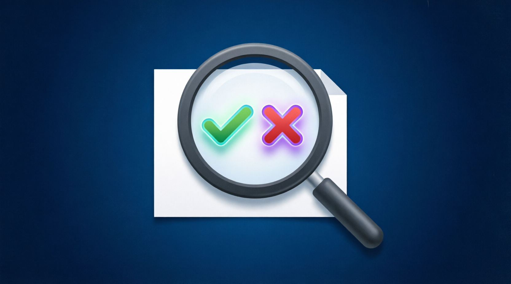
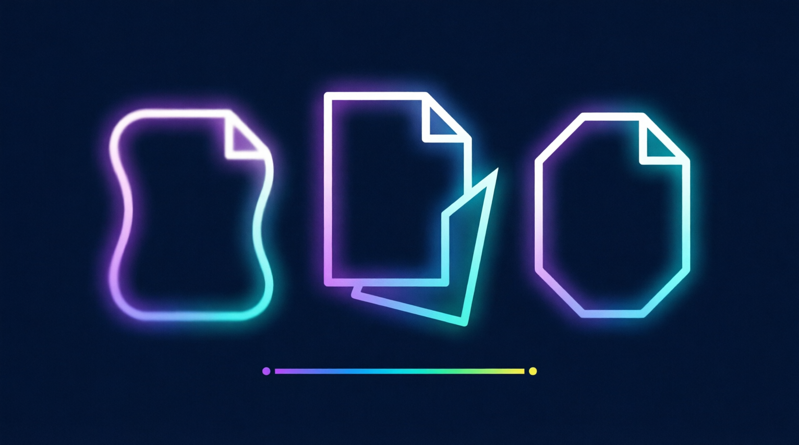
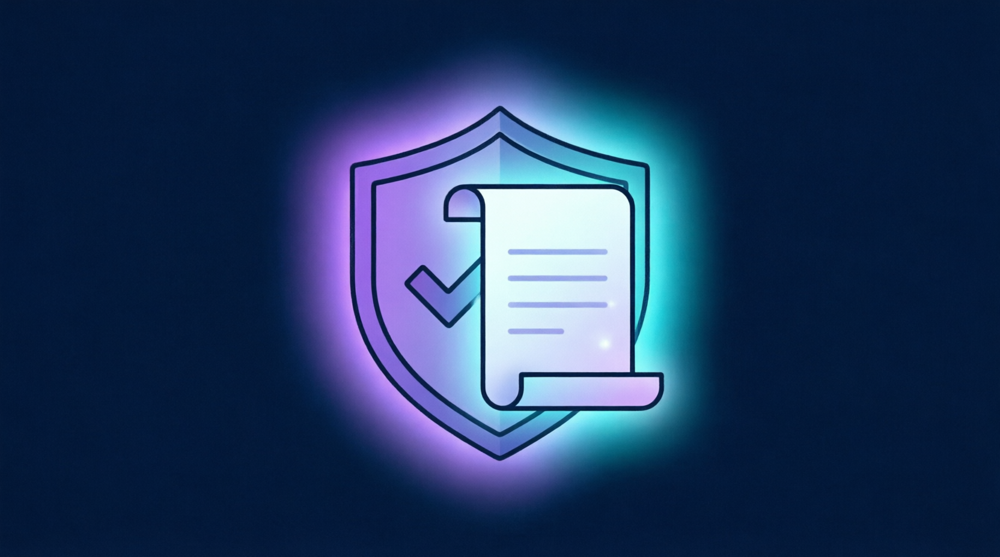
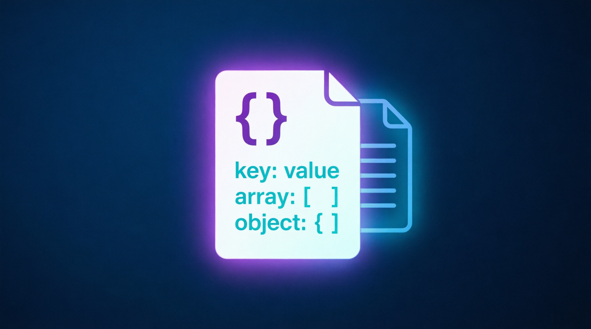

anti-ai-qwen-academy • AI Editor / Neurocopywriter
Qwen (Tongyi Qianwen) • 100% Offline • 10 days

🔍
🎨
⚖️
📊🏆 CERTIFICATE REQUIREMENTS
AI Editing + Qwen formats
No mistakes
5 cases in Qwen formats
⚠️ Perfect results → Contributor Pipeline access
📊 Progress
⚠️ All data will be deleted
🛠️ AI Editor Toolkit
Interactive tools for practicing AI editing skills
✍️ Prompt Builder
Craft effective prompts for Qwen
🔍 Fact-Check Simulator
Practice verifying claims offline
🔄 RLHF Comparator
Compare two AI responses and justify your choice
📚 AI Editor Specialist Library
Pipelines, data formats, tools, materials
🎯 Why Qwen needs AI Editors
Qwen generates vast amounts of content. AI Editors ensure quality, accuracy, and ethical compliance before content reaches users.
✍️ Content Refinement
Editing AI-generated text for clarity, accuracy, and brand voice
qwen_editor_prompt.json🔍 Fact Verification
Cross-checking claims in AI outputs against known facts
qwen_factcheck_report.md🎨 Style Adaptation
Adapting AI content tone for different audiences and platforms
qwen_style_guide.json⚖️ Safety & Ethics Review
Identifying bias, manipulation, and policy violations
qwen_safety_audit.csvRLHF Annotation
Scoring and comparing model responses for alignment training
qwen_rlhf_pair.json🛠️ Graduate Skills
🔹 Hard Skills
- Prompt engineering for Qwen models
- Offline fact-checking methodology
- Style and tone adaptation
- RLHF response scoring and comparison
- JSON/Markdown reporting (Qwen-compatible)
🔹 Soft Skills
- Critical reading and analysis
- Cultural sensitivity and localization
- Ethical judgment in content review
- Clear documentation for ML teams
- Compliance mindset: Tongyi AI Principles
💼 Where do AI Editors work?
Starting salaries: $500-2000/mo • Remote • Flexible
📈 Path to AI Editor Specialist
- Days 1-3: AI editor role, prompt engineering, fact-checking basics
- Days 4-6: Style adaptation, ethics, localization
- Days 7-8: Reporting formats, RLHF annotation
- Day 9: Portfolio in Qwen formats
- Day 10: FINAL EXAM (10/10)
📦 Qwen Editor Reporting Formats
🤝 SUPPORT THE PROJECT 💙
App is free. Always will be.
Support development: